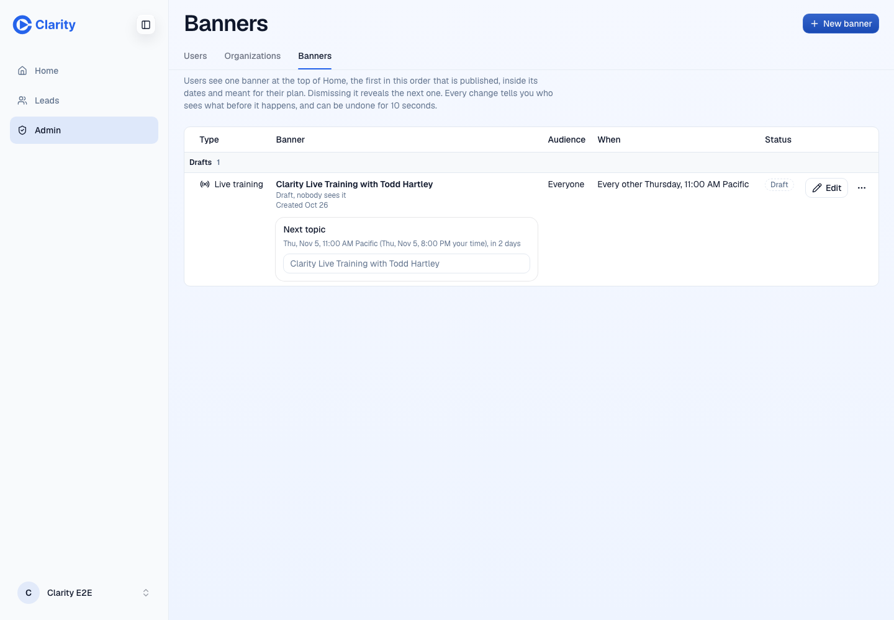
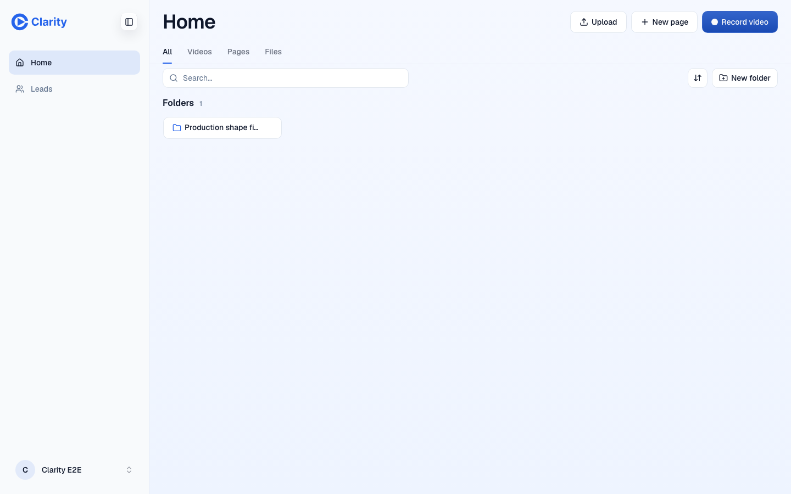
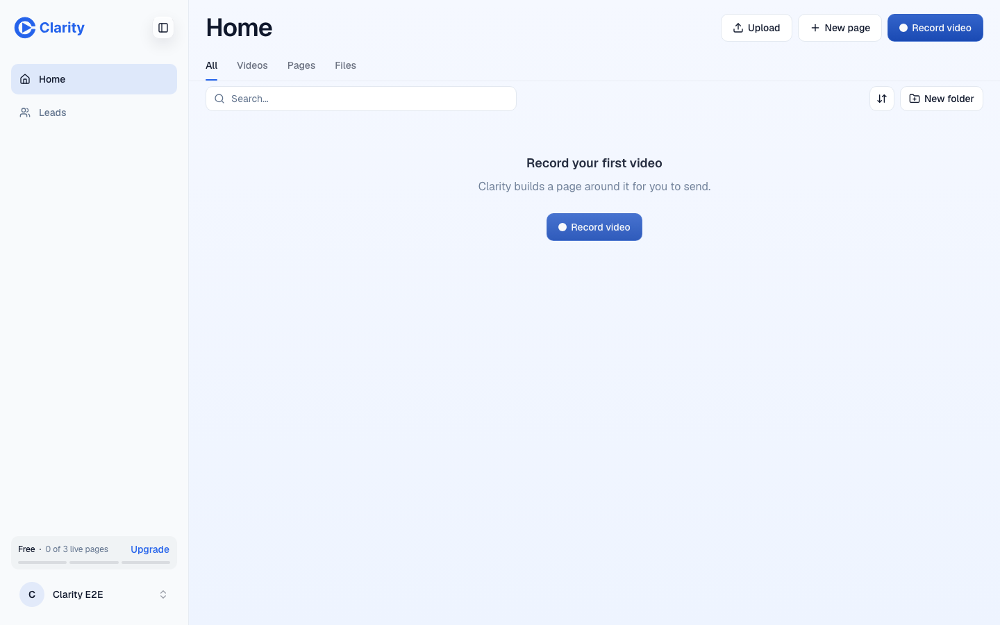
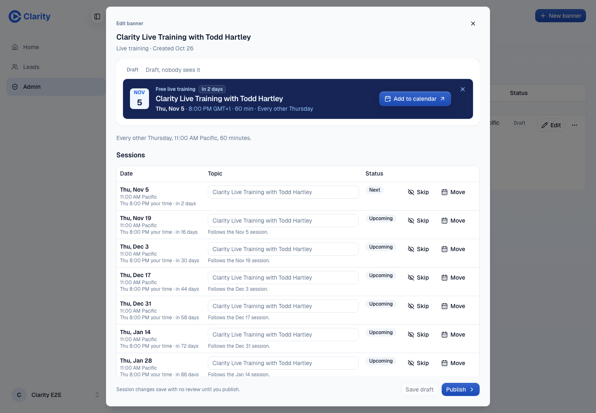
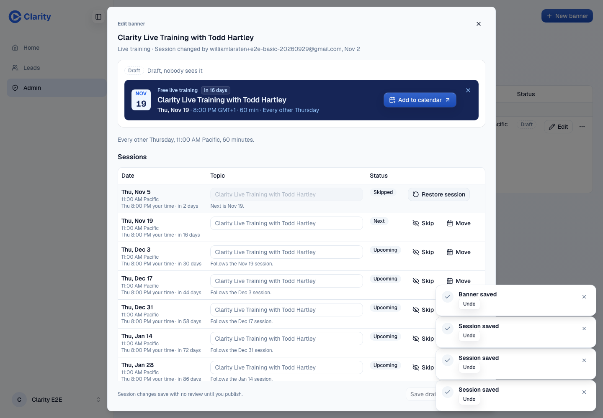
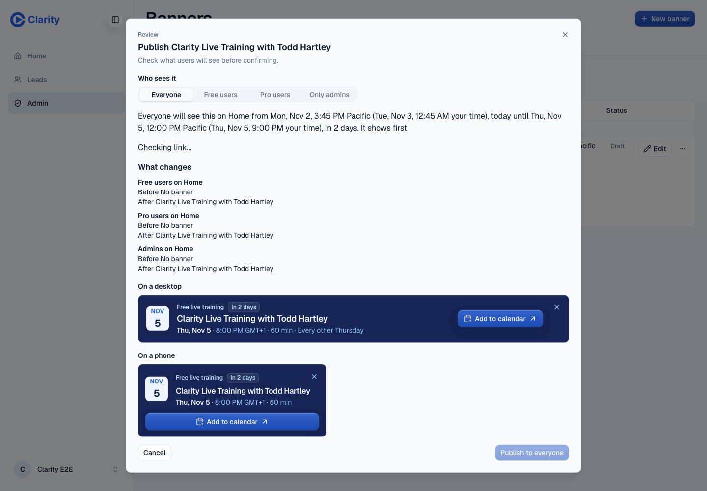
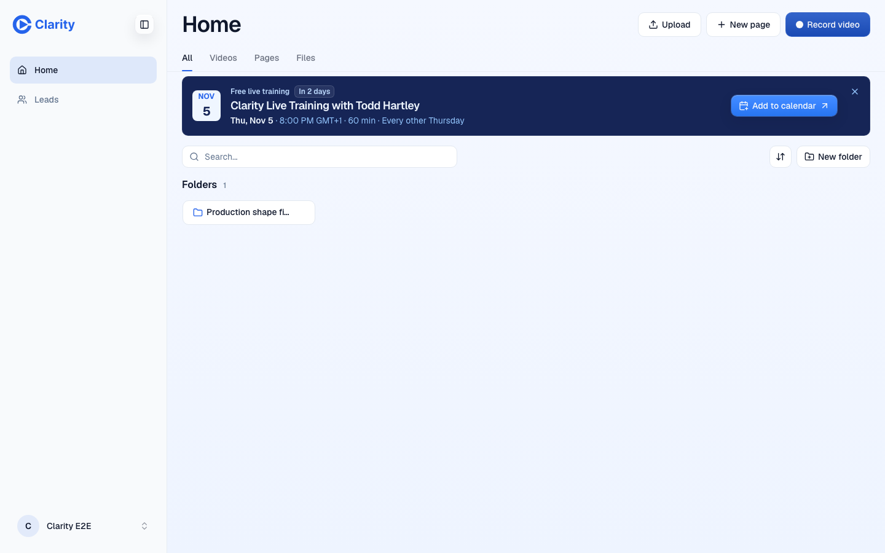

PR #1604, preview pass at head 2b076a2b3, merged with main a1a8b87b5 at release. Test accounts only.
| Check | Result | Evidence |
|---|---|---|
| Migration on a real database | Pass | 0060_banners.sql ran from scratch after 0061. One row: live-training, status draft, history snapshot draft. |
| Nobody sees a banner | Pass | Free, Pro and admin each got {"banners":[]} on a real Home load, with no card on Home or Help. |
| A draft promises nothing | Pass | Skip and move open no review. Session rows say "Follows the Nov 5 session" and "Next is Nov 19." They name Home only once live. |
| Save draft on the live training | Pass | Saves with no review, closes, persists after reload, and Undo restores it. |
| Typed work is not lost | Pass | Save draft and Publish wait for a typed topic and say why. Unpublish keeps an editor with unsaved work open. |
| Publishing later works | Pass | Review, Cancel writes nothing, publish reaches Free and Pro on Home and Help, and Undo and Unpublish each take it back off. |
| Staff only | Pass | A Pro user is redirected from the admin page, and staff_banners_list answers 403. |
| Rest of the admin page | Pass | 10 browser flows: table, picker, editor, discard guard, What changes, order, sessions, Only admins, delete, dark, 390 px. |
| Automated checks | Pass | Root pnpm test 75931 pass and 0 fail, typecheck, lint, security scan with one false positive, CI green. |
| Item | Effect |
|---|---|
| The Undo toast can cover the editor's footer buttons | Up to 10 seconds on short windows. It can be dismissed. |
| A date in the inline Move form does not count as unsaved | Closing the editor drops that one date with no warning. Nothing reaches users. Follow-up. |






